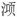

青 玉 案
贺 铸
凌波不过横塘路① ，但目送，芳尘去。锦瑟华年谁与度② ？月桥花院，琐窗朱户，只有春知处。 飞云冉冉蘅皋暮③ ，彩笔新题断肠句④ 。试问闲愁都几许？一川烟草，满城风絮，梅子黄时雨。
【注释】
①凌波：形容女子步履轻盈。参见周邦彦《瑞鹤仙》注。横塘：在苏州胥门外九里，贺铸建小筑于此。 ②锦瑟华年：青春岁月；语出李商隐《锦瑟》诗：“锦瑟无端五十弦，一弦一柱思华年。” ③冉冉：形容云慢慢移动。蘅皋：长着香草的水边高地。 ④彩笔：用江淹得五色笔而能写漂亮诗文事。参见周邦彦《过秦楼》“才减江淹”注。
【语译】
姑娘轻盈的步子并不过横塘路这边来，我只好用目光送她逐渐远去。她那美好的青春岁月也不知跟谁一起度过，她居住的地方想必有赏月的小桥、种花的庭院、雕刻着连琐纹的窗子和朱红色的门户，只有春天才知道它在哪里。
浮云慢慢地移动着，长着香草的河岸上已暮色来临，我用才情洋溢的笔新写成十分伤感的诗句。你想问我心头无故的烦恼有多少吗？它就像河边青烟似的绵绵不绝的芳草，被风吹得满城飞舞的柳絮，还有那黄梅季节老是下个不停的雨。
【赏析】
这首词是贺铸的名作。周紫芝《竹坡诗话》云：“贺方回尝作《青玉案》词，有‘梅子黄时雨’之句，人皆服其工，士大夫谓之‘贺梅子’。”吴曾《能改斋漫录》云：“贺方回为《青玉案》词，山谷尤爱之，故作小诗以纪其事。”山谷诗云：“解作江南断肠句，只今唯有贺方回。”（《寄贺方回》）词写作者寓居苏州横塘期间的孤寂苦闷，即词中所谓的“闲愁”，而这种“闲愁”又通过“望美人兮不来”表现的。写得美人有点像洛神，所以很难说是纪实呢，还是一种象征性的虚拟。
词一开头就说这位纤步轻盈的美人不过我居处的路上来，自己只能目送她远去。“凌波”“芳尘”，都出自《洛神赋》“凌波微步，罗袜生尘”。说“不过”而又“目送”，将自己对她的留情属意写透了。照例接着应写自己的心情，却从悬想美人境况折射出来，是深一层写法。“锦瑟”事本也出自神女传说，经李商隐诗一用，则青春岁月，如何度过，不待“追忆”，已有“茫然”之感。不但“谁与度”不可知，连住在何处也不知道。不知道而又说得十分具体：楼外“月桥花院”，闺阁“琐窗朱户”。当然都是出于想像，觉得其居处应当如此而已，这正是心驰神往的表现。不知道而说‘只有春知处’，说法与韦庄《女冠子》“除却天边月，没人知”相似；“春”字从“锦瑟华年”生出。
过片“飞云”（一本作“碧云”）句，即是江淹诗“日暮碧云合，佳人殊未来”意，而同时又取用《洛神赋》中词：“尔乃税驾乎蘅皋。”因其未来而望其到来，不觉时已迟暮，只有寄情于“彩笔”题句；然而自己虽有江郎之才，能题“断肠”之句，而美人终不可得，于是“闲愁”转深，遂有“几许”之问。所答三句是此词最受称赞的。如沈际飞云：“叠写三句闲愁，真绝唱！”（《草堂诗余正集》）罗大经云：“诗家有以山喻愁者，杜少陵云：‘忧端如山来（按：原诗作“齐终南”），

洞不可掇。’赵嘏云：‘夕阳楼上山重叠，未抵闲愁一倍多。’是也。有以水喻愁者，李颀云：‘请量东海水，看取浅深愁。’李后主云：‘问君能有几多愁？恰似一江春水向东流。’秦少游云：‘落红万点愁如海。’是也。贺方回云：‘试问闲愁都几许？一川烟草，满城风絮，梅子黄时雨。’盖以三者比愁之多也，尤为新奇；兼兴中有比，意味更长。”（《鹤林玉露》）总之，其特点是连续用了几个比喻，即所谓“博喻”，而又都是自春至夏这段时间中所见的景物；它们不但数量多，而其景象本身又都能引起人们的愁绪来，所以巧妙。